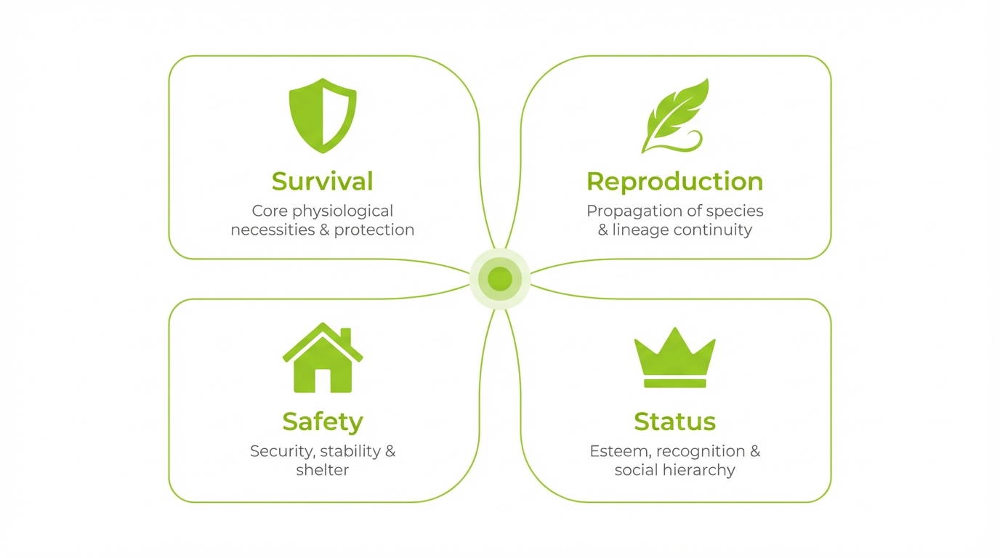
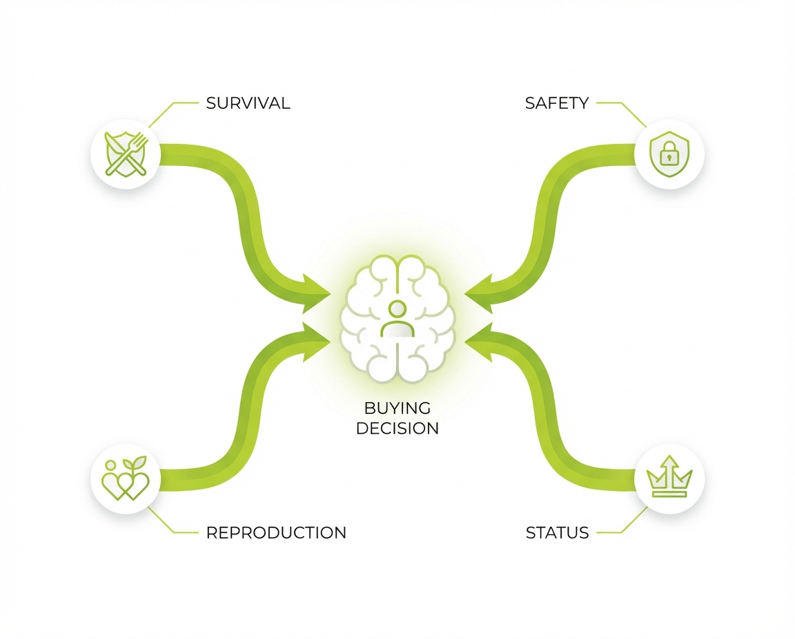

<!DOCTYPE html>
<html lang="en">
<head>
  <meta charset="UTF-8">
  <meta name="viewport" content="width=device-width, initial-scale=1.0">
  <title>The Four Primal Needs</title>
  <script src="https://cdn.tailwindcss.com"></script>
  <script src="https://unpkg.com/react@18/umd/react.production.min.js"></script>
  <script src="https://unpkg.com/react-dom@18/umd/react-dom.production.min.js"></script>
  <script src="https://unpkg.com/@babel/standalone/babel.min.js"></script>
  <script src="https://unpkg.com/framer-motion@10.16.4/dist/framer-motion.js"></script>
  <link href="https://fonts.googleapis.com/css2?family=Inter:wght@300;400;500;600;700;800&display=swap" rel="stylesheet">
  <script>
    tailwind.config = {
      theme: {
        extend: {
          colors: {
            accent: {
              DEFAULT: '#84cc16',
              50: '#f7fee7',
              100: '#ecfccb',
              200: '#d9f99d',
              300: '#bef264',
              400: '#a3e635',
              500: '#84cc16',
              600: '#65a30d',
              700: '#4d7c0f',
              800: '#3f6212',
              900: '#365314',
            }
          }
        }
      }
    }
  </script>
  <style>
    * { font-family: 'Inter', -apple-system, BlinkMacSystemFont, sans-serif; }
    body { background: #FFFFFF; color: #1a1a1a; overflow-x: hidden; }
    ::selection { background: #84cc16; color: #fff; }
    h1, h2, h3, h4 { letter-spacing: -0.025em; }
    .lesson-container { max-width: 800px; margin: 0 auto; }
  </style>
</head>
<body>
  <div id="root"></div>

  <script type="text/babel">
    const { motion, useInView, AnimatePresence } = window.Motion;
    const { useState, useRef, useEffect } = React;

    const smoothEase = [0.25, 0.4, 0.25, 1];

    // Icons
    const Icons = {
      Shield: () => (
        <svg width="24" height="24" viewBox="0 0 24 24" fill="none" stroke="currentColor" strokeWidth="2" strokeLinecap="round" strokeLinejoin="round">
          <path d="M12 22s8-4 8-10V5l-8-3-8 3v7c0 6 8 10 8 10z"/>
        </svg>
      ),
      Feather: () => (
        <svg width="24" height="24" viewBox="0 0 24 24" fill="none" stroke="currentColor" strokeWidth="2" strokeLinecap="round" strokeLinejoin="round">
          <path d="M20.24 12.24a6 6 0 0 0-8.49-8.49L5 10.5V19h8.5z"/><line x1="16" y1="8" x2="2" y2="22"/><line x1="17.5" y1="15" x2="9" y2="15"/>
        </svg>
      ),
      Home: () => (
        <svg width="24" height="24" viewBox="0 0 24 24" fill="none" stroke="currentColor" strokeWidth="2" strokeLinecap="round" strokeLinejoin="round">
          <path d="M3 9l9-7 9 7v11a2 2 0 0 1-2 2H5a2 2 0 0 1-2-2z"/><polyline points="9 22 9 12 15 12 15 22"/>
        </svg>
      ),
      Crown: () => (
        <svg width="24" height="24" viewBox="0 0 24 24" fill="none" stroke="currentColor" strokeWidth="2" strokeLinecap="round" strokeLinejoin="round">
          <path d="M2 4l3 12h14l3-12-6 7-4-7-4 7-6-7zm3 16h14"/>
        </svg>
      ),
      Zap: () => (
        <svg width="20" height="20" viewBox="0 0 24 24" fill="none" stroke="currentColor" strokeWidth="2" strokeLinecap="round" strokeLinejoin="round">
          <polygon points="13 2 3 14 12 14 11 22 21 10 12 10 13 2"/>
        </svg>
      ),
      Target: () => (
        <svg width="20" height="20" viewBox="0 0 24 24" fill="none" stroke="currentColor" strokeWidth="2" strokeLinecap="round" strokeLinejoin="round">
          <circle cx="12" cy="12" r="10"/><circle cx="12" cy="12" r="6"/><circle cx="12" cy="12" r="2"/>
        </svg>
      ),
      Users: () => (
        <svg width="20" height="20" viewBox="0 0 24 24" fill="none" stroke="currentColor" strokeWidth="2" strokeLinecap="round" strokeLinejoin="round">
          <path d="M17 21v-2a4 4 0 0 0-4-4H5a4 4 0 0 0-4 4v2"/><circle cx="9" cy="7" r="4"/><path d="M23 21v-2a4 4 0 0 0-3-3.87"/><path d="M16 3.13a4 4 0 0 1 0 7.75"/>
        </svg>
      ),
    };

    // Animation components
    function FadeUp({ children, delay = 0, className = "" }) {
      const ref = useRef(null);
      const isInView = useInView(ref, { once: true, margin: "-80px" });
      return (
        <motion.div
          ref={ref}
          className={className}
          initial={{ opacity: 0, y: 40 }}
          animate={isInView ? { opacity: 1, y: 0 } : {}}
          transition={{ duration: 0.7, delay, ease: smoothEase }}
        >
          {children}
        </motion.div>
      );
    }

    function ScaleIn({ children, delay = 0, className = "" }) {
      const ref = useRef(null);
      const isInView = useInView(ref, { once: true, margin: "-50px" });
      return (
        <motion.div
          ref={ref}
          className={className}
          initial={{ opacity: 0, scale: 0.95 }}
          animate={isInView ? { opacity: 1, scale: 1 } : {}}
          transition={{ duration: 0.6, delay, ease: smoothEase }}
        >
          {children}
        </motion.div>
      );
    }

    function Counter({ end, suffix = "", prefix = "" }) {
      const [count, setCount] = useState(0);
      const ref = useRef(null);
      const isInView = useInView(ref, { once: true });

      useEffect(() => {
        if (isInView) {
          let start = 0;
          const duration = 2000;
          const increment = end / (duration / 16);
          const timer = setInterval(() => {
            start += increment;
            if (start >= end) {
              setCount(end);
              clearInterval(timer);
            } else {
              setCount(Math.floor(start));
            }
          }, 16);
          return () => clearInterval(timer);
        }
      }, [isInView, end]);

      return <span ref={ref}>{prefix}{count}{suffix}</span>;
    }

    // Interactive Needs Explorer
    function NeedsExplorer() {
      const [activeNeed, setActiveNeed] = useState(0);

      const needs = [
        {
          name: "Survival",
          icon: "Shield",
          desc: "The foundational need. Think insurance, health, security, financial stability.",
          examples: "Health products, insurance, emergency services, financial planning",
          copyAngle: "Protect what you've built. Secure your future."
        },
        {
          name: "Reproduction",
          icon: "Feather",
          desc: "The drive to multiply and attract. Powers the luxury and beauty markets.",
          examples: "Beauty products, dating services, luxury goods, fashion",
          copyAngle: "Be more attractive. Command attention. Stand out."
        },
        {
          name: "Safety & Security",
          icon: "Home",
          desc: "The need to protect oneself and one's family. A particularly strong driver for women.",
          examples: "Home security, family insurance, self-defense, safe communities",
          copyAngle: "Keep your family safe. Create a secure environment."
        },
        {
          name: "Status",
          icon: "Crown",
          desc: "The need for hierarchy and social standing. A particularly strong driver for men.",
          examples: "Premium brands, exclusive memberships, achievements, recognition",
          copyAngle: "Rise above. Earn respect. Achieve recognition."
        }
      ];

      const iconComponents = {
        Shield: Icons.Shield,
        Feather: Icons.Feather,
        Home: Icons.Home,
        Crown: Icons.Crown
      };

      const IconComponent = iconComponents[needs[activeNeed].icon];

      return (
        <div className="bg-white rounded-2xl border border-neutral-200 overflow-hidden">
          <div className="grid grid-cols-4">
            {needs.map((need, i) => {
              const NeedIcon = iconComponents[need.icon];
              return (
                <button
                  key={need.name}
                  onClick={() => setActiveNeed(i)}
                  className={`py-4 px-2 text-center transition-all border-b-2 ${activeNeed === i ? 'border-accent-500 bg-accent-50' : 'border-transparent hover:bg-neutral-50'}`}
                >
                  <div className={`mx-auto mb-1 ${activeNeed === i ? 'text-accent-600' : 'text-neutral-400'}`}>
                    <NeedIcon />
                  </div>
                  <p className={`text-xs font-medium ${activeNeed === i ? 'text-accent-700' : 'text-neutral-500'}`}>{need.name}</p>
                </button>
              );
            })}
          </div>
          <motion.div
            key={activeNeed}
            initial={{ opacity: 0, y: 10 }}
            animate={{ opacity: 1, y: 0 }}
            className="p-6"
          >
            <div className="flex items-center gap-3 mb-4">
              <div className="w-12 h-12 rounded-xl bg-accent-100 flex items-center justify-center text-accent-600">
                <IconComponent />
              </div>
              <h4 className="text-lg font-semibold text-neutral-900">{needs[activeNeed].name}</h4>
            </div>
            <p className="text-sm text-neutral-600 mb-4">{needs[activeNeed].desc}</p>
            <div className="space-y-3">
              <div className="bg-neutral-50 rounded-lg p-3 border border-neutral-100">
                <p className="text-xs text-neutral-500 uppercase tracking-wider mb-1">Examples</p>
                <p className="text-sm text-neutral-700">{needs[activeNeed].examples}</p>
              </div>
              <div className="bg-accent-50 rounded-lg p-3 border border-accent-200">
                <p className="text-xs text-accent-600 uppercase tracking-wider mb-1">Copy Angle</p>
                <p className="text-sm text-accent-800 italic">"{needs[activeNeed].copyAngle}"</p>
              </div>
            </div>
          </motion.div>
        </div>
      );
    }

    // Main Lesson Component
    function Lesson() {
      return (
        <div className="bg-white min-h-screen overflow-x-hidden">
          {/* Hero Section - Black with gradient accent */}
          <header className="bg-neutral-950 text-white relative overflow-hidden">
            <div className="absolute top-0 right-0 w-96 h-96 bg-gradient-to-bl from-accent-600/10 to-transparent rounded-full blur-3xl" />
            <div className="absolute bottom-0 left-0 w-64 h-64 bg-gradient-to-tr from-accent-900/20 to-transparent rounded-full blur-2xl" />

            <div className="lesson-container px-6 py-20 relative z-10">
              <FadeUp>
                <div className="flex items-center gap-2 mb-6">
                  <span className="px-3 py-1 bg-accent-600/20 text-accent-400 text-xs font-semibold rounded-full tracking-wide uppercase">
                    Architecture of Belief
                  </span>
                </div>
              </FadeUp>

              <FadeUp delay={0.1}>
                <h1 className="text-4xl font-extrabold mb-4 leading-tight">
                  The Four Primal Needs
                </h1>
              </FadeUp>

              <FadeUp delay={0.2}>
                <p className="text-xl text-neutral-300 mb-8 max-w-2xl leading-relaxed">
                  Every buying decision traces back to four fundamental human drives. Align your messaging with these primal needs and watch resistance dissolve.
                </p>
              </FadeUp>

              <FadeUp delay={0.3}>
                <div className="flex flex-wrap gap-6 text-sm text-neutral-400">
                  <div className="flex items-center gap-2">
                    <Icons.Target />
                    <span>4 universal drivers</span>
                  </div>
                  <div className="flex items-center gap-2">
                    <Icons.Zap />
                    <span><Counter end={100} suffix="%" /> of decisions affected</span>
                  </div>
                </div>
              </FadeUp>
            </div>
          </header>

          {/* Main Content */}
          <main className="px-6 py-12">
            <div className="lesson-container space-y-16">

              {/* The Core Insight */}
              <FadeUp>
                <section>
                  <p className="text-lg text-neutral-700 leading-relaxed">
                    The trade-offs a person makes are not random. They are governed by <strong>four fundamental human needs</strong> that have driven behavior since the dawn of humanity. Your copy is most powerful when it aligns with one or more of these primal drivers.
                  </p>
                  <p className="text-lg text-neutral-700 leading-relaxed mt-4">
                    Understanding these needs transforms your messaging from logical arguments into emotional imperatives. You stop selling products and start fulfilling deep human drives.
                  </p>
                </section>
              </FadeUp>

              {/* Hero Image */}
              <ScaleIn>
                <div className="rounded-2xl overflow-hidden bg-neutral-100 max-w-2xl mx-auto">
                  
                </div>
              </ScaleIn>

              {/* Interactive Explorer */}
              <FadeUp>
                <section>
                  <h2 className="text-2xl font-bold text-neutral-900 mb-4">Explore Each Need</h2>
                  <p className="text-neutral-600 mb-6">Click each need to see how it drives buying behavior and copy angles.</p>
                  <NeedsExplorer />
                </section>
              </FadeUp>

              {/* Gender Differences - Black Section */}
              <FadeUp>
                <section className="bg-neutral-950 rounded-3xl p-8 md:p-10 overflow-hidden relative">
                  <div className="absolute top-0 right-0 w-64 h-64 bg-gradient-to-bl from-accent-600/20 to-transparent rounded-full blur-3xl" />

                  <div className="relative z-10">
                    <div className="flex items-center gap-3 mb-6">
                      <div className="w-10 h-10 rounded-xl bg-gradient-to-br from-accent-400 to-accent-600 flex items-center justify-center text-white">
                        <Icons.Users />
                      </div>
                      <h2 className="text-2xl font-bold text-white">Gender Differences in Motivation</h2>
                    </div>

                    <p className="text-neutral-300 leading-relaxed mb-6">
                      While everyone responds to all four needs, research shows gender-based tendencies that smart marketers account for in their messaging strategy.
                    </p>

                    <div className="grid md:grid-cols-2 gap-6">
                      <div className="bg-white/5 backdrop-blur rounded-xl p-6 border border-white/10">
                        <p className="text-accent-400 font-semibold mb-3">Men Tend to Lean Into Status</p>
                        <p className="text-sm text-neutral-300 mb-3">Hierarchy, achievement, recognition, and competitive positioning resonate strongly.</p>
                        <p className="text-xs text-neutral-400">Copy angle: Frame your offer as a competitive advantage that elevates their position relative to peers.</p>
                      </div>

                      <div className="bg-white/5 backdrop-blur rounded-xl p-6 border border-white/10">
                        <p className="text-accent-400 font-semibold mb-3">Women Tend to Lean Into Safety</p>
                        <p className="text-sm text-neutral-300 mb-3">Protection, security, family wellbeing, and risk mitigation drive stronger responses.</p>
                        <p className="text-xs text-neutral-400">Copy angle: Frame your offer as creating security and protection for what matters most.</p>
                      </div>
                    </div>

                    <div className="mt-6 p-4 bg-white/5 rounded-lg border border-white/10">
                      <p className="text-sm text-neutral-400 text-center">
                        <strong className="text-neutral-200">Important:</strong> These are tendencies, not rules. Always research your specific audience and test your messaging.
                      </p>
                    </div>
                  </div>
                </section>
              </FadeUp>

              {/* The Subconscious Calculus */}
              <FadeUp>
                <section>
                  <h2 className="text-2xl font-bold text-neutral-900 mb-6">The Subconscious Calculus of Choice</h2>

                  <p className="text-neutral-600 leading-relaxed mb-6">
                    A $10,000 price tag isn't just $10,000 in the buyer's mind. It's a vacation, a new car payment, student loans, or 50 dinners out. The higher the price, the more competing desires pull against your offer.
                  </p>

                  <div className="bg-accent-50 border border-accent-200 rounded-2xl p-6 mb-6">
                    <p className="text-accent-800 italic text-lg mb-2">"Whenever you choose something... you say no to a whole lot of other things."</p>
                    <p className="text-sm text-accent-700 mt-3">The choices acquired from the decision have to exceed the choices lost. Your offer must be framed as an expansion of choice, not a limitation.</p>
                  </div>

                  <div className="grid md:grid-cols-2 gap-6">
                    <div className="p-5 rounded-xl bg-neutral-50 border border-neutral-200">
                      <h3 className="font-semibold text-neutral-900 mb-2">Frame as Expansion</h3>
                      <p className="text-sm text-neutral-600 leading-relaxed">
                        Position your product as opening doors, not closing them. Show how the investment creates more options, more freedom, more possibilities than it costs.
                      </p>
                    </div>

                    <div className="p-5 rounded-xl bg-neutral-50 border border-neutral-200">
                      <h3 className="font-semibold text-neutral-900 mb-2">Reduce Perceived Loss</h3>
                      <p className="text-sm text-neutral-600 leading-relaxed">
                        Guarantees, financing options, and resale value all reduce the perceived "choice cost" of your product. Make saying yes feel reversible and safe.
                      </p>
                    </div>
                  </div>
                </section>
              </FadeUp>

              {/* Framework Image */}
              <ScaleIn>
                <div className="rounded-2xl overflow-hidden bg-white border border-neutral-100 shadow-sm max-w-xl mx-auto">
                  
                </div>
              </ScaleIn>

              {/* Common Mistakes */}
              <FadeUp>
                <section>
                  <h2 className="text-2xl font-bold text-neutral-900 mb-6">Mistakes When Using Primal Needs</h2>

                  <div className="space-y-4">
                    <div className="p-5 rounded-xl bg-red-50 border border-red-100">
                      <h3 className="font-semibold text-neutral-900 mb-2">Wrong Need for the Audience</h3>
                      <p className="text-sm text-neutral-600">
                        Selling a safety product with status messaging, or a luxury item with survival language. Mismatched needs create cognitive dissonance and kill conversions. Research your specific audience's primary drivers.
                      </p>
                    </div>

                    <div className="p-5 rounded-xl bg-red-50 border border-red-100">
                      <h3 className="font-semibold text-neutral-900 mb-2">Too Many Needs at Once</h3>
                      <p className="text-sm text-neutral-600">
                        Trying to hit all four needs equally dilutes your message. Choose one primary need as your anchor, then subtly weave in one or two secondary needs. Focus creates clarity.
                      </p>
                    </div>

                    <div className="p-5 rounded-xl bg-red-50 border border-red-100">
                      <h3 className="font-semibold text-neutral-900 mb-2">Surface-Level Application</h3>
                      <p className="text-sm text-neutral-600">
                        Simply adding the word "exclusive" doesn't trigger status needs. You must paint a vivid picture of how the product elevates their position. Go deep, not superficial.
                      </p>
                    </div>

                    <div className="p-5 rounded-xl bg-red-50 border border-red-100">
                      <h3 className="font-semibold text-neutral-900 mb-2">Ignoring Cultural Context</h3>
                      <p className="text-sm text-neutral-600">
                        While these needs are universal, their expression varies by culture. Status symbols differ between countries. Safety concerns vary by region. Localize your approach.
                      </p>
                    </div>
                  </div>
                </section>
              </FadeUp>

              {/* How to Apply - Black Section */}
              <FadeUp>
                <section className="bg-neutral-950 rounded-3xl p-8 md:p-10 overflow-hidden relative">
                  <div className="absolute inset-0 bg-gradient-to-t from-accent-900/10 via-transparent to-transparent" />

                  <div className="relative z-10">
                    <h2 className="text-2xl font-bold text-white mb-6">Applying the Four Needs</h2>

                    <div className="space-y-4">
                      <div className="bg-white/5 backdrop-blur rounded-xl p-5 border border-white/10">
                        <p className="text-accent-400 font-medium mb-2">Step 1: Identify the Primary Driver</p>
                        <p className="text-sm text-neutral-300">Research which need most strongly motivates your audience. Survey them, read reviews, study competitors. Find the dominant driver.</p>
                      </div>

                      <div className="bg-white/5 backdrop-blur rounded-xl p-5 border border-white/10">
                        <p className="text-accent-400 font-medium mb-2">Step 2: Stack Secondary Needs</p>
                        <p className="text-sm text-neutral-300">Once you've anchored to the primary need, layer in secondary needs. A car can satisfy status AND safety AND reproduction (attractiveness).</p>
                      </div>

                      <div className="bg-white/5 backdrop-blur rounded-xl p-5 border border-white/10">
                        <p className="text-accent-400 font-medium mb-2">Step 3: Use Need-Specific Language</p>
                        <p className="text-sm text-neutral-300">Status needs respond to words like "elite," "exclusive," "recognition." Safety needs respond to "protect," "secure," "guarantee."</p>
                      </div>

                      <div className="bg-white/5 backdrop-blur rounded-xl p-5 border border-white/10">
                        <p className="text-accent-400 font-medium mb-2">Step 4: Test and Refine</p>
                        <p className="text-sm text-neutral-300">Run A/B tests with different need-based angles. Let the data tell you which driver converts best for your specific audience and offer.</p>
                      </div>
                    </div>
                  </div>
                </section>
              </FadeUp>

              {/* Key Takeaways - Black Section */}
              <FadeUp>
                <section className="bg-neutral-950 rounded-3xl p-8 md:p-10">
                  <h2 className="text-2xl font-bold text-white mb-6">Key Takeaways</h2>

                  <div className="grid md:grid-cols-2 gap-4">
                    {[
                      "Four primal needs drive all decisions: Survival, Reproduction, Safety & Security, and Status. Align your messaging with these for maximum impact.",
                      "Men tend to respond more to Status messaging; women tend to respond more to Safety messaging. Research your specific audience for accuracy.",
                      "Every purchase competes with other desires. Frame your offer as an expansion of choice, not a limitation. Make the trade-off feel favorable.",
                      "Stack multiple needs in your messaging. The strongest offers satisfy the primary driver while touching secondary needs as well."
                    ].map((point, i) => (
                      <div key={i} className="flex gap-3 bg-white/5 rounded-xl p-4 border border-white/10">
                        <div className="w-6 h-6 rounded-full bg-accent-500 flex items-center justify-center flex-shrink-0 mt-0.5">
                          <span className="text-xs font-bold text-white">{i + 1}</span>
                        </div>
                        <p className="text-sm text-neutral-300 leading-relaxed">{point}</p>
                      </div>
                    ))}
                  </div>
                </section>
              </FadeUp>

            </div>
          </main>

          {/* Footer */}
          <footer className="py-10 bg-neutral-50">
            <div className="lesson-container px-6 text-center">
              <p className="text-sm text-neutral-400">Part of the Architecture of Belief Series</p>
            </div>
          </footer>
        </div>
      );
    }

    ReactDOM.createRoot(document.getElementById('root')).render(<Lesson />);
  </script>
</body>
</html>
